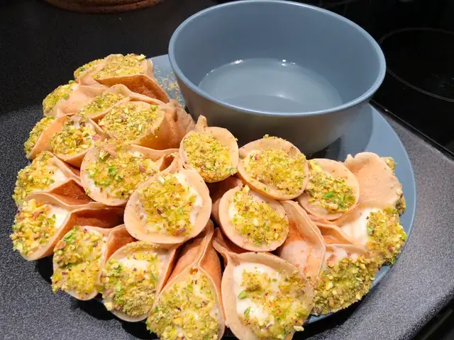

Qatayef قَطـَايِـفْ - Lebanese Pancakes
presentation:

When you say Qatayef to a Lebanese person,
they immediately think of Ramadan.
It's the most common, budget, and tasty dessert
when filled with Ashta, walnuts or even sweetened white cheese!
Ingredients
Batter
- 1 cup flour
- 1/4 cup fine semolina
- 1 tablespoon sugar
- 1/2 teaspoon baking powder
- 1/2 teaspoon instant yeast
- 1/4 teaspoon salt
- 2 1/2 cups warm water (approx)
- 1/2 teaspoon baking soda
Filling
- Ashta for dessert (sweet Lebanese clotted cream)
- Crushed pistachio
- Sugar syrup for topping (or honey)
- 2 cups granulated white sugar
- 1 cup water
- Squeeze lemon juice
Cooking Instructions
For Batter
- Combine the dry ingredients well in a large bowl.
- Start adding water gradually while stirring until everything is well incorporated. You should have a slightly runny but thick texture.
- Set aside, cover and let it rest for around 20 to 30 minutes.
-
- Get a non-stick pan.
- Brush with a very very thin layer of vegetable oil,
- turn the heat to medium,
- pour approximately 2 tablespoon of the batter. Bubbles are a great sign 😊 cook until the pores are completely dry.
DO NOT FLIP!
For Filling
- Add 1 tablespoon of Ashta,
- cottage cheese or clotted cream.
- Pinch 2/3 of the pancake to seal properly and keep the last part open.
- Dip the open side in crushed pistachio
Sugar Syrup
- Mix 2 cups of sugar in one cup of water and cook until boiling and the sugar has melted.
- Add a squeeze of lemon juice with a few drops of rose water and orange blossom water.
- Set aside to cool down so it becomes a bit thick before you drizzle on your dessert.
Serving The Recipe
Drizzle sugar syrup (preferred) or honey on top and
enjoy!!
Happy Ramadan 🌙 🧡